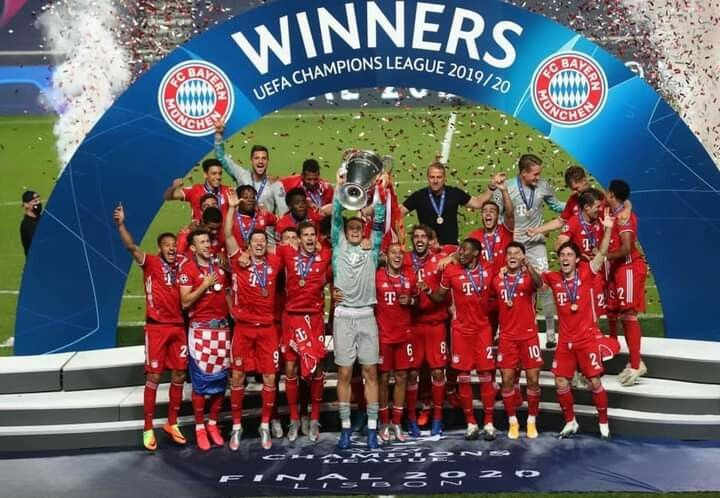

Sejarah FC Bayern München
Footbal Club Bayern München e.V., juga dikenal sebagai FC Bayern München atau FC Bayern, adalah sebuah klub sepakbola Jerman yang berbasis di München, Bayern. Merupakan klub paling sukses dalam sejarah sepak bola Jerman, setelah memenangkan rekor 30 gelar nasional dan 19 piala nasional,Bayern Munich didirikan pada tahun 1900 oleh sebelas pemain, dipimpin oleh Franz John . Meskipun Bayern memenangkan kejuaraan nasional pertamanya pada tahun 1932 , klub ini tidak terpilih untuk Bundesliga pada awal berdirinya pada tahun 1963
UEFA SUPER CUP CHAMPIONS
Bayern München memenangi pertandingan ini dengan skor 2–1 melalui perpanjangan waktu untuk mengamankan gelar Piala Super UEFA yang kedua
BUNDESLIGA
FC Bayern München telah memenangkan Bundesliga yang paling banyak, dengan 33 gelar
ALIANZ ARENA
Allianz Arena adalah nama sebuah stadion sepak bola yang terletak di distrik Fröttmaning di sebelah utara kota Munchen, Jerman. Stadion ini dibuka pada tanggal 30 Mei 2005 dengan pertandingan persahabatan antara TSV 1860 München dan 1. FC Nürnberg.
About Me

SYAHLEVI ABDUL MAJID
Jakarta,30,September,2005
life,love,lose
Popular Post
Follow Me
@syhlevi_
@fcbayern